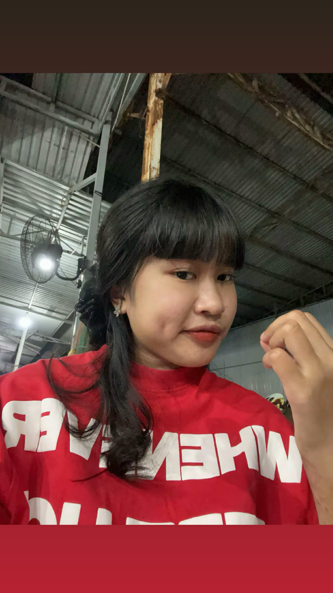

Trong tập thể 10C1, Huệ Lâm là cái tên mang đến sự an tâm mỗi khi đội cần một điểm tựa trên hàng công.
Với vai trò tiền đạo cấm, Huệ Lâm không cần nhiều pha xử lý hoa mỹ nhưng luôn xuất hiện đúng thời điểm.
Tổng cộng 2 bàn thắng tuy không nhiều về số lượng nhưng đều mang ý nghĩa quan trọng.
Khả năng chọn vị trí và dứt điểm gọn gàng là điểm mạnh nổi bật.
Trong tương lai, đây chắc chắn sẽ là mũi nhọn đáng gờm của 10C1. Mặc dù bị chê cười nhưng chính những nụ cười đó lại là niềm động lực hiếm có. Chính những bàn thắng ấy lại giúp lâm lập nên những kỳ tích hiếm thấy, kế bên đó cặp đôi song sắt của Lâm là Ngọc Anh, mặc dù hay bị chê cười nhưng bạn ấy luôn luôn là cánh tay phải của Huệ Lâm giúp cho các bạn có những bàn thắng siêu vip. Siêu tiền đạo Huệ Lâm – 10C1 là mẫu cầu thủ không cần phải xuất hiện quá nhiều trên mặt báo hay được nhắc tên liên tục để khẳng định giá trị của mình. Sự nguy hiểm của Huệ Lâm nằm ở chính sự thầm lặng đó. Trên sân, Lâm không phải là người rê bóng hoa mỹ hay tạo ra những pha xử lý cầu kỳ, nhưng mỗi lần bóng tiến gần khu vực vòng cấm, cái tên Huệ Lâm luôn khiến hàng phòng ngự đối phương phải dè chừng. Điều làm nên bản chất của một tiền đạo cấm đúng nghĩa chính là khả năng đọc tình huống và chọn vị trí, và Huệ Lâm làm điều đó một cách rất tự nhiên. Khi đồng đội còn đang tranh chấp ở tuyến giữa, Lâm đã âm thầm di chuyển, tìm kiếm khoảng trống giữa các hậu vệ. Có những pha bóng tưởng chừng như vô hại, nhưng chỉ cần một nhịp chạm hoặc một đường bóng bật ra, Huệ Lâm lập tức xuất hiện đúng điểm nóng nhất để tung ra cú dứt điểm. Không phải ngẫu nhiên mà Huệ Lâm được giao trọng trách chơi cao nhất trên hàng công của 10C1. Ở vị trí tiền đạo cấm, áp lực luôn rất lớn: ít bóng, ít khoảng trống, nhưng mỗi cơ hội đều phải tận dụng. Huệ Lâm hiểu rõ điều đó và luôn giữ cho mình sự bình tĩnh cần thiết. Hai bàn thắng đã ghi được không chỉ phản ánh khả năng dứt điểm, mà còn cho thấy tâm lý thi đấu vững vàng – yếu tố cực kỳ quan trọng đối với một tiền đạo. Mỗi bàn thắng của Huệ Lâm đều mang ý nghĩa vượt xa con số thống kê. Đó là kết quả của sự phối hợp ăn ý với đồng đội, của những pha di chuyển không bóng tưởng như đơn giản nhưng lại vô cùng hiệu quả. Trong nhiều tình huống, chính việc Huệ Lâm thu hút sự chú ý của hậu vệ đối phương đã tạo điều kiện để các đồng đội phía sau có thêm không gian xử lý bóng. Không chỉ đóng vai trò ghi bàn, Huệ Lâm còn là người giữ nhịp cho hàng công. Khi đội bóng cần sự chắc chắn, Lâm sẵn sàng lùi về làm tường, che chắn bóng và tạo điều kiện cho tuyến hai băng lên. Khi đội cần sự đột biến, Huệ Lâm lập tức dâng cao, sẵn sàng chớp lấy cơ hội trong vòng cấm. Sự linh hoạt trong cách chơi giúp Huệ Lâm trở thành một mắt xích quan trọng trong hệ thống chiến thuật của 10C1. Tinh thần thi đấu của Huệ Lâm cũng là điểm khiến nhiều người ấn tượng. Trên sân, Lâm không bao giờ bỏ cuộc trong những pha tranh chấp tay đôi. Dù bị kèm chặt hay va chạm liên tục, Huệ Lâm vẫn giữ được sự tập trung và quyết tâm. Chính tinh thần đó đã truyền năng lượng tích cực cho toàn đội, giúp 10C1 luôn duy trì được sự tự tin trong suốt trận đấu. Ngoài sân cỏ, Huệ Lâm là người khá trầm tính, không ồn ào. Nhưng chính sự điềm tĩnh đó lại trở thành vũ khí khi bước vào trận đấu. Dưới áp lực từ khán giả và đối thủ, Huệ Lâm vẫn giữ được cái đầu lạnh để đưa ra những quyết định chính xác. Đây là tố chất không phải cầu thủ trẻ nào cũng có, đặc biệt là ở vị trí tiền đạo cấm – nơi mọi sai lầm đều có thể bị trả giá ngay lập tức. Hai bàn thắng hiện tại chỉ là khởi đầu cho hành trình của Huệ Lâm trong màu áo 10C1. Điều quan trọng hơn cả là tiềm năng phát triển còn rất lớn. Khi kinh nghiệm thi đấu ngày càng dày dặn và sự ăn ý với đồng đội ngày càng cao, Huệ Lâm hoàn toàn có thể trở thành mũi nhọn chủ lực, người gánh vác trọng trách ghi bàn trong những trận đấu quan trọng nhất. Với 10C1, Huệ Lâm không chỉ là một tiền đạo, mà còn là biểu tượng cho tinh thần thi đấu kỷ luật, kiên trì và quyết tâm. Mỗi lần ra sân, Huệ Lâm mang theo kỳ vọng của cả tập thể, và bằng những gì đã thể hiện, niềm tin đó là hoàn toàn có cơ sở. Dù phía trước còn nhiều thử thách, cái tên Siêu tiền đạo Huệ Lâm – 10C1 chắc chắn sẽ tiếp tục được nhắc đến như một phần quan trọng trong hành trình phát triển và chinh phục của đội bóng này. Trong tập thể 10C1, nơi mỗi cá nhân đều mang một màu sắc riêng, cái tên Huệ Lâm luôn được nhắc đến với sự chú ý đặc biệt. Không phải vì những lời nói ồn ào hay sự phô trương, mà bởi lối chơi âm thầm, chắc chắn và đầy quyết đoán trên hàng công. Với vai trò tiền đạo cấm, Huệ Lâm là mẫu cầu thủ luôn biết cách xuất hiện đúng lúc, đúng chỗ – nơi chỉ cần một khoảnh khắc chậm trễ cũng có thể đánh mất cơ hội. Trên sân, Huệ Lâm không phải người chạy nhiều nhất, cũng không phải người hoa mỹ nhất, nhưng lại là người nguy hiểm nhất trong vòng cấm. Mỗi bước di chuyển đều có mục đích, mỗi pha chạm bóng đều mang theo ý đồ rõ ràng. Đó là phẩm chất của một tiền đạo thực thụ: không cần quá nhiều bóng, chỉ cần một cơ hội là đủ để tạo khác biệt. Trong màu áo 10C1, Huệ Lâm đã ghi được tổng cộng 2 bàn thắng – con số không quá lớn nếu chỉ nhìn bề ngoài, nhưng lại mang ý nghĩa cực kỳ quan trọng. Cả hai bàn thắng đều đến trong những thời điểm then chốt, khi đội cần một người đứng ra phá vỡ thế bế tắc. Điều đó cho thấy bản lĩnh và tâm lý thi đấu vững vàng – thứ không thể rèn luyện trong ngày một ngày hai. Ngoài khả năng dứt điểm, Huệ Lâm còn là cầu nối quan trọng giữa tuyến trên và tuyến giữa. Những pha che chắn bóng, làm tường và thu hút hậu vệ đối phương đã mở ra không gian cho đồng đội băng lên. Đó là thứ đóng góp thầm lặng nhưng cực kỳ giá trị, giúp lối chơi chung của 10C1 trở nên mạch lạc và hiệu quả hơn. Không ồn ào, không phô trương, Huệ Lâm chọn cách để hành động lên tiếng. Trên sân cỏ, mỗi lần Huệ Lâm đứng trong vòng cấm, đối phương đều phải dè chừng, bởi chỉ một khoảnh khắc lơ là cũng có thể phải trả giá. ---Trong tập thể 10C1, nơi mỗi cá nhân đều mang một màu sắc riêng, cái tên Huệ Lâm luôn được nhắc đến với sự chú ý đặc biệt. Không phải vì những lời nói ồn ào hay sự phô trương, mà bởi lối chơi âm thầm, chắc chắn và đầy quyết đoán trên hàng công. Với vai trò tiền đạo cấm, Huệ Lâm là mẫu cầu thủ luôn biết cách xuất hiện đúng lúc, đúng chỗ – nơi chỉ cần một khoảnh khắc chậm trễ cũng có thể đánh mất cơ hội.
Trên sân, Huệ Lâm không phải người chạy nhiều nhất, cũng không phải người hoa mỹ nhất, nhưng lại là người nguy hiểm nhất trong vòng cấm. Mỗi bước di chuyển đều có mục đích, mỗi pha chạm bóng đều mang theo ý đồ rõ ràng. Đó là phẩm chất của một tiền đạo thực thụ: không cần quá nhiều bóng, chỉ cần một cơ hội là đủ để tạo khác biệt.
Trong màu áo 10C1, Huệ Lâm đã ghi được tổng cộng 2 bàn thắng. Con số này tuy không quá lớn nếu nhìn bề ngoài, nhưng lại mang ý nghĩa cực kỳ quan trọng. Cả hai bàn thắng đều đến trong những thời điểm then chốt, khi đội cần một người đứng ra phá vỡ thế bế tắc, thể hiện rõ bản lĩnh và tâm lý thi đấu vững vàng.
Ngoài khả năng dứt điểm, Huệ Lâm còn đóng vai trò quan trọng trong việc kết nối lối chơi. Những pha che chắn bóng, làm tường và thu hút hậu vệ đối phương đã tạo điều kiện cho đồng đội băng lên. Đây là những đóng góp thầm lặng nhưng cực kỳ giá trị, giúp tập thể 10C1 vận hành trơn tru và hiệu quả hơn.
Không ồn ào, không phô trương, Huệ Lâm chọn cách để hành động lên tiếng. Mỗi lần đứng trong vòng cấm, sự hiện diện của Huệ Lâm đều khiến hàng thủ đối phương phải dè chừng. Chỉ một khoảnh khắc lơ là cũng có thể phải trả giá, và đó chính là sức nặng mà một tiền đạo cấm mang lại.
PHÂN TÍCH CHUYÊN MÔN: Ở góc độ chiến thuật, Huệ Lâm là mẫu tiền đạo cấm cổ điển nhưng được vận hành trong một tập thể hiện đại. Điểm mạnh lớn nhất nằm ở khả năng chọn vị trí và đọc tình huống – yếu tố mang tính bản năng và rất khó huấn luyện.
Trong sơ đồ của 10C1, Huệ Lâm thường là mũi nhọn cao nhất, giữ vị trí trung tâm hàng công. Điều này buộc hàng phòng ngự đối phương phải tập trung, từ đó mở ra không gian cho tuyến hai khai thác. Vai trò của Huệ Lâm không chỉ là ghi bàn mà còn là điểm neo chiến thuật cho toàn đội.
Hai bàn thắng đã ghi được là minh chứng cho hiệu suất sử dụng cơ hội cực kỳ hiệu quả. Huệ Lâm không cần dứt điểm quá nhiều, mà tập trung vào chất lượng, thể hiện sự điềm tĩnh và tự tin trong những tình huống áp lực cao.
Về mặt tinh thần, Huệ Lâm là mẫu cầu thủ tạo ra niềm tin cho đồng đội. Khi đội gặp khó khăn, chỉ cần một đường bóng hướng vào vòng cấm, mọi người đều tin rằng Huệ Lâm có thể tạo ra khác biệt. Chính niềm tin này giúp tập thể 10C1 chơi gắn kết và tự tin hơn.
Nếu tiếp tục duy trì phong độ và hoàn thiện kỹ năng, Huệ Lâm hoàn toàn có thể trở thành đầu tàu hàng công của 10C1 trong những chặng đường tiếp theo, không chỉ bằng bàn thắng mà còn bằng tầm ảnh hưởng chiến thuật và tinh thần.
--- Tới đây cũng hết r xin cảm ơn mn đã đọc ---℗ 10C1 Media [© 2026 10C1. All rights reserved.]---